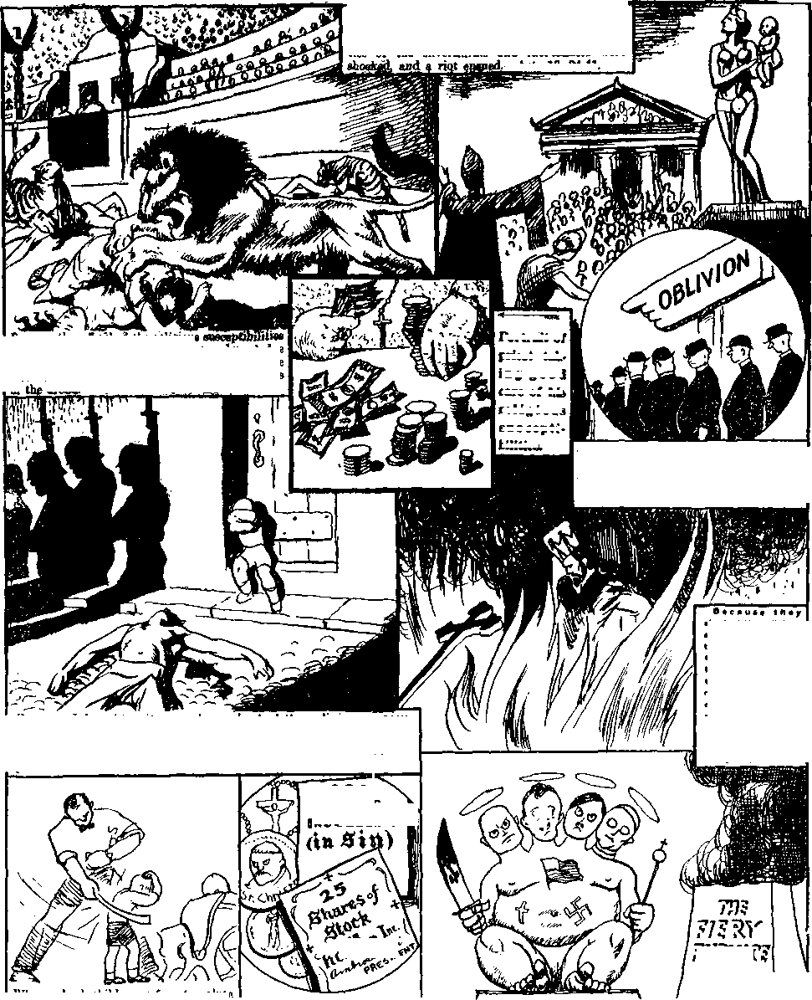

A JOURNAL OF FACT HOPE AND COURAGE
iiiiiiiiimiiiiiiiiimiiiiiiiiiiiiiiiiiiiiiiiiimiiiiiiiiiiimiiiiiiiiiiiiii
in this issue
PHILISTIA [CATHOLIC ACTION] A MURDERESS FOR 1500 YEARS (Part 2)
THIEF IN HEAVEN
EXPELLED FROM HER HOME FOR LOYALTY TO GOD
SCIENCE AND INVENTION
THE TRANSFIGURATION AND VINDICATION
IlIllIlllllllllilllllllllHIIMIIIIIIIIMIIIIIIIIIIIIIIillllllllllllllllllilllll
every other WEDNESDAY five cents a copy one dollar a year Canada & Foreign 1.25
Vol. XVII - No. 437 June 17, 1936
.-u-rg.
■•©MS"
CONTENTS
LABOR AND ECONOMICS
SOCIAL AND EDUCATIONAL
Expelled from Her Home
Something New in Chicago:
The Transfiguration and
FINANCE—COMMERCE—TRANSPORTATION
Through Highways
Automatic Aids to Safe Driving
The Cotton Highway of ^Mississippi 597
POLITICAL—DOMESTIC AND FOREIGN
Blatant Fascism in Massachusetts 599
Professional Patriots in New York 599, N<w York to End Slums
Bla-phemers of the Holy Name 600 Mayor La Guardia Shows Sense 600 Jw Stand on Flag Saluting Right 600
Camden Police Officials in Distress
Maryland Still Has Some Liberty
Suits Against Harlan County
Uses of an Officer of the Law 603 The Dawes $80,000,000 Haul
SCIENCE AND INVENTION
The Ridiculous Evolution Theory
HOME AND HEALTH
Stuttering Cases Aided by Crawling
Mental Cures at Sykesville, Md.
RELIGION AND PHILOSOPHY
Philistia [Catholic Action] a
Universal Prayers for the Pope
A Pictorial Visit to Vatican City
Massachusetts—
• • • — ■ — ----— —..... ~ • 1 " 1 • (eJXfi• •
Published every other Wedne>day by GOLDEN AGE PUBLISHING COMPANY, INC.
117 Adams Street, Brooklyn, N. Y., U. S. A.
Clayton J. Woodworth President Nathan H. Knorr Vice President
Charles E. Wagner Secretary and Treasurer
FIVE CENTS A COPY
$1 a year, United States ; $1.25 to Canada and all other countries.
Notice to Subscribers
Remittances : For your own safety, remit by postal or express money order. When coin or currency is lost in the ordinary mails, there is no redress. Remittances from countries other than those named below may be made to the Brooklyn office, but only by international postal money order.
Receipt of a new or renewal subscription will be acknowledged only when requested. Notice of expiration is sent with the journal one month before subscription expires. Please renew promptly to avoid loss of copies.
Fend change of address direct to us rather than to the post office. Your request should reach us at least two weeks before the date of issue with which it is to take effect. Send your old as well as the new address. Copies will not be forwarded by the post office to your new address unless extra postage is provided by you.
Published also in Bohemian, Danish, Dutch, Finnish, French, German, Greek, Japanese, Norwegian, Polish, Spanish, Swedish.
Offices for Other Countries
British 34 Craven Terrace, London. W. 2, England
Canadian 40 Irwin Avenue. Toronto 5, Ontario, Canada
Australasian 7 Beresford Road. Strathfiold, N. S. W., Australia
South African Boston House, Cape Town, South Africa
Entered as second-class matter at Brooklyn, N. Y'., under the Act of March 3, 1879. -----------
Volume XVII Brooklyn, N. Y., Wednesday, June 17, 1936 Number 437
Philistia [Catholic Action] a Murderess for 1500 Years
(In Three Parts—Part 2)
ON SUNDAY May 3, 1936, 381 Catholic churches in the New York diocese united in “prayer for the persecuted people” of the world, which was all the more remarkable because the Roman Catholic Hierarchy is more responsible for the bitter persecution of Jehovah’s witnesses all over the earth than all other influences put together.
On the same day that these prayers to the Devil were being offered in New York and vicinity, 49 of Jehovah’s witnesses were being stoned and arrested in Hazleton and Mauch Chunk, Pa., for taking the message of God’s kingdom to the homes of the people, encouraging them to look forward to the happy days when there will be no Devil to deceive the people and no Hierarchy to do his will in the earth.
At Mauch Chunk the tools of the Hierarchy were so eager to get Jehovah’s witnesses into trouble that they arrested them illegally on Sunday (which can
Universal Prayers for the Pope
Here we have Bishop Ealph Hayes, rector of the American college in Eome, dressed in his fireman’s uniform. His purgatorial highness made the headlines by hailing Ambrose as the pope of peace. The former bishop of Montana threw aside all restraint and in his usual flowery and romantic style, unembarrassed by facts or figures (magnanimously forgetting the papal twins Mussolini and Hitler), literally plastered the pope with pious platitudes. But he saved the best for last. “Not only Catholics, but Protestants, Jews and peoples of no creed—all men who love peace, justice and charity—may well join in the official prayers of the church for the supreme pontiff. ‘May the Lord preserve Pope Pius XI, give him life and make him blessed and the earth deliver him not up to the will of his enemies.’ ” Golden Age readers, knowing who are his enemies, will benefit gastronomically—a good laugh aids digestion.
of the county was out of town at the time. When he came home he demanded the commitment papers, which could not be legally issued on Sunday, and not finding them, opened the doors and told the witnesses to go free. A comical answer to the prayers in the New York diocese.
Bishop Hayes, formerly of Montana, but now of Rome, wants everybody to pray for the pope. Within a few days after his request mobs were setting fire to churches, monasteries and convents all over Spain, shouting, “Burn all the pope’s property.” More than thirty convents and churches were burned. Liberal papers in Spain stated that professional agitators did the firing.
Isn’t it a trifle inconsistent to want people to pray for the pope whose very lives are in danger because there is a pope ? If the pope wants others to pray for him he should at The Orangeman's prayer “To hell with the pope’’ is the only general prayer for the pope that will receive any favorable action in the place where favor is worth while.—Psalm 55:15.
not be done in Pennsylvania on that day without a warrant), tried them illegally on Sunday, and sentenced them to the county prison. The sheriff
least backtrack on this idea that as soon as the Catholic church is strong enough it proposes to take the lives of all the other people in the world. 579
The Sydney Morning Herald of October 22 reports receipt by the Catholic publication Australian Messenger of a cable from the pope asking for prayers for something special he has on his mind. Whatever it was it was something the pope did not wish to broadcast.
The pope closed the "holy year” with a prayer. It was not a prayer to the Father in secret, as Jesus instructed, but it was a prayer broadcast over the radio, addressed to the virgin Mary, and intended for the newspapers. The principal receiving apparatus was in the land of Magog. —Ezekiel .‘IS: 2, 3.
On the strength of the prediction of a fortune teller the pope expects he will live until he is 93. The pope's Easter candle was eight feet high and three inches thick. The report does not mention the size and number of his Easter eggs and Easter bunnies.
A Zurich paper says that Ambrose likes to have them step on the gas and move right along down the pike when he goes riding on Mondays, Tuesdays, Fridays and Saturdays in his plain Fiat car. On Wednesdays he takes another Fiat car, No. 521, but the public is left in deep distress to know which car he takes on Thursdays and Sundays. He has three others, for use on these days, but three cars do not divide up into two days, nohow.
The Vatican, by the way, has'250 autos for the little city's 716 inhabitants, which is a record of one chariot for every three persons. The United States comes next, with one for every five. The Vatican cars bear the initials SCV to indicate that they are from the Sovrana Citta del Vatican©.
The first ten cars have red figures on a white background and are for the personal use of the pope and his retinue. The car that the pope likes best has an easy chair in the back, instead of an ordinary seat. Angelo Stroppa has been his chauffeur for twelve years.
Do men like lace petticoats'? Do they? Does a cat like cream ? As a matter of fact all the men are jealous of the girls on this lace business. Here is a picture of seven priests out in front of St. Bernard's church, Wauwatosa, Wisconsin. Three of them are dressed in as nice lace petticoats as you ever saw, and all the fellows are just burning up over it. The men have always had to buy the lace and let the girls wear it, while they dress in ugly pants and go around looking like old-fashioned clothespins, instead of dollies, as they might, if they would all go into the priest business.
A clipping from New Zealand discloses that only certain girls may wear purple. It took a bishop, a dean and a common or garden variety of priest to confer this right on H. F. Holbrook, Roman Catholic parish priest of Grey Lynn, New Zealand. Lots of the girls will be jealous now. But some of them, with the wrong kind of complexion, will just turn up.their noses in a curt way, and say that they never did like purple, anyway.
The girls of Texas put one over on their northern sisters that will be the talk of dressmakers for months to come. In April, at Galveston, there was a huge celebration in charge of the Most Reverend C. E. Byrne, bishop of Galveston. The women's page bristled with this information: “Bishop Byrne has ordered white silk vestments, hand embroidered with Texas bluebonnets, for the ministers who celebrate the mass. The vestments will be trimmed in gold.” Now won't that make the northern ladies turn green with envy?
Concerning the winter style show at Vatican City the papers say: “Priests and prelates in gold and silver vestments, in black, white, red and purple robes, will gather around the kneeling cardinals. They will form a rainbow of color in a vast mass of black worn by the tens of thousands'” of plain mutts that pay for the show. The girls certainly do love to climb into glittering harness and put it all over on the plain men-folks.
Of the full-length prostration of the batch of new cardinals before the pope, the account says:
‘’Two prelates waved fans of ostrich feathers at tire papal throne when the pope took his seat there at the altar, while the papal anthem ‘Tu es Petrus’ was played. The ceremony of adoration was carried out. Each member of the College of Cardinals passed before the pope and kissed his papal ring. The new cardinals were led by older ones to the throne where they knelt .and kissed the pope’s red-slippered foot, his ring and embraced him.”
Then they got their red hats and fell headlong,
fiere-M* snapshot of the Maternity Hc*piUl«whe»e all manner of lr« are brought forth It is Sfiis jmgkhar UMthtstiM that has giwo the Hierarchy Ute odd name of “mother". ft la removed Mpwd teve^moph tp (fee. disgust of other htoly" owftra) that the (real majorityo( the cfed-dram ta!Hpe$B^fl)»?e*«rtL Due to on increased ikrfh rate there Is a jofreUyof beds.' A aolaajioa idfaeanatahtP to rednee the thnrtw Above te Fra MMarone toohftkg two of* Un W^tarov^.
'Nursery and Orphanage In thss colossal ntrrser) all the newborn ltrs are cayfiilly ntrreod and fed no tbsy ran grow ap U> bo big, etyoag and Mffrf he» <»the world laadfftjloa. in her rote as ‘mother", all orphoft Res. windrrHg usoJcm flea, the* he»e no place tn nwet. ye taken in and noorutad faithfully, wribost regard to their on^n or parentage Roam- fqr all is si * pcanuuBi. and a eofl^rtyn m being taboo Iq Mfargy the ptemt InAbe fofsgsopqd u the graveyard tfr.e'je afruTtha racwtsiafy > high). *Ml p the miMleground* poor Utl»popttlti«,vtebfn of the Ethiopian campagm. id being interred
The Plaster-out Factory, where hoages, idols, craofixee, altars, etc., are modeled, cast, mo1«t ed. carved, paurted. gilded. bud so frtrth. AH* all kinda’of "hMfcy medals' and othgr jank. Although there da plenty of piaster of Pana, grid leaf w scaw, and a enilectjon is h**ng lifted to. increase Cbe-qyppjy. 1T»e shipping mom is jhaftothe left-'flawerar, before they are whipped toQnteyars, Her aresaflt to—
The Blessing Factory, where the new-Uesslng machine (not to be confused with praver wheels) will bias* them. (Ha, hat yon bought Ose pope did it, didn't This machine was not invented by Edison (suspicion. bower, rente m Mmccd), but it u thoroughly modern, eaeept-tqg forth* chain drive, juat foniaoat tbeeap. where tt should be a worm drive A nollnrtrey is bgqgitgjpn to correct this error By throwing the asMtioe in reverse the blaster become* an 0tetdfcter. Be beady soon, eb1
Looks gnih, doesn’t itf Well, there may be a tittle gristle—after all, you eanM trust the «sty morgue to do a elean job Here is Friar Bunko bathing wfcM v.ill some dav be the- venous parts o( rereral 'atiBls' Fnar Bunko would like to come to the U S Savs he's tired of scrubbing the boass of dirty crooks who should be tuned wt the poMers field ad hadn't ought to be marie Mints’ relics. In the background u a cartload of more trams arriving (Poor Fit Bunko f) At present they are tWivertd by Mtt drawn by an unfit plug, but * coTWign w being taken to buy • me* c*t-wvef-«ngirie track to do the work.
'Holy Water Distillery aod Petticoat Factory Thousands of prusts in the vorid. And they aft-* have to have tbetr paettua. The petticoat' factory had a deficit lost yesu-, aod a ooOartign, a>* In the foreground >s the new jail and the sacred buB stable. Yes, you are ri*t? Socnacda W deamsg the sacred bud UaUa; probably Ambrose- Tte w
eweekn th* sacred str*wben**fc
A Pictorial Visit to Vatican City — Uncensored Photos from the Staff Photographer
after which, in an inner chamber, their lips were opened and closed by the pope, to indicate that they are to talk when he says talk, and shut up when he says shut up.
After changing her "religion” from Episcopalian to Roman Catholic, and living with Alfonso king of Spain for thirty years, in which time she bore him six children, Victoria, granddaughter of Queen Victoria, without any hearing, was adjudged by old man Ratti's so-called ‘‘Rota” as never married to her husband at all. Of course, this “decision” of the Rota is entirely without honor, entirely without reason, entirely without justice and entirely without decency, and without force. It is merely a decision of the Roman Hierarchy, which is, in fact, a decision of the Devil himself.
Vatican City has built itself a new three-cell jail. Swiss Guards dressed in medieval boiler plate will have it in charge. What is this jail for, in this holy (?) city of 716 holy (?) men?
Here is a little book, intended for circulation among American Negroes, entitled “Blessed Martin” and bearing the words “Imprimatur Jacobus Josephus Episcopus Columbensis”, meaning that it has the official endorsement of the Roman Catholic bishop of Colombia.
Page 5 says: “Whenever reviled, he would thank his persecutors for their interest in him, beg pardon for his faults and promise to do better in the future. With this he was wont to kiss their feet.” The book does not show who the re-vilers were, but everybody knows the gang that like to have their feet kissed, and so can guess.
The next page says: “Even rats shared his attention and benefited by his kindness. When they were going to be destroyed in the convent he came to their rescue by sending one of them to gather the rest and lead them into the garden. There he fed them, happy to have prevented the suffering of even the least of God’s creatures.”
The Roman Catholic Penitentes of New Mexico have rites and ceremonies so savage that the penalty for disclosing them is burial alive at night. So long as the Roman Cult has such disgraceful goings on done in its name, it should cease its pretense of being the custodian of the world's morals and start house cleaning.
Albert Fall, of New Mexico, joined the same church as Doheny, Dutch Schultz, Mwanalesa and Al Capone. When they all “get to heaven”, they can join in singing, “Hail! Hail! The Gang's All Here,” etc.
The Reverend John A. Toomey, Jesuit, who accepted Dutch Schultz into the Roman Catholic fold, is going to have to do some tall explaining when he meets that gentleman on the golden streets. Dutch will call his attention to the fact that his earnings through murders and general racketeering operations amounted to $827,253 in the six weeks before he was croaked, and will probably want an accounting.
At Florence there was something unusually sacred. A cartload of fireworks was shot off in front of the cathedral. The sacred thing about it was the sacred bulls, of which there were four, white ones, with golden hoofs. They drew the cart. Just why a bull has to have his hoofs gilded to be a holy bull was not explained. The staff artist seems to have had this and other holy bulls in mind in the last scene on page 581. Or had he ?
The San Antonio Light contains a four-column picture of Reverend Benjamin Sliva, S.J., blessing cats, dogs, canaries and chickens. As a result of this blessing the cats will have more kittens, the dogs will have more fleas and more pups, the canaries will sing better, and the chickens will sit more stylishly on the roost, pigeons will have more squabs; goats will have a better flow of milk, sheep will have more lambs; chickens will lay more eggs, and guinea pigs—hold on, now, this thing has gone far enough; they just couldn’t have more descendants, no matter what the priest said. And, besides, who would pay for the feed-?
When Captain Mollison and his wife landed in the mud at Bridgeport, and came near breaking their necks, and did, in fact, land in a hospital, it came out that they each had on them medals of St. Christopher, Roman Catholic ‘protector of travelers’. And now comes the news that on St. Christopher’s day automobiles were blessed at the church of St. Christopher at Baldwin, N. Y.; just when the authorities were trying to reduce accidents, too.
Robert Ripley says that pious Queen Isabella of Spain was proud of the fact that she had but two baths in her life: one when she was born, and the other when she was married. The Spanish Jew (?) Christopher Columbus was glad to accept her jewels and light out for a better world. Her Catholic piety smelled to heaven.
A Few Incidents When Religious Susceptibilities Were “Shocked”, Down Through the Centuries
—Aeta 19 .-34-41.
Because the apostlePauI’proclaimed ChriSt Jesus and Jehovah and branded as a false god Diapaof the Ephesians (an idol) the religious susceptibilities of the silversmiths and idol-makers were
s were beasts
4
Portrait of
priest tak-
ing good
care of his
religions
suscepti
bilities.
ahockad the rollflloua susceptibilities of the Roman CathoHo Hierarchy by refua-Ino to acknowledge that church ae God**
earth, million* of ln^ nocent persons' suffered torture, exile and death by fire, at the hands of the •‘Holy inquisition”.
Because they mocked the religious of the Roman emperors by refusing to acknowledge them as gods, thousands of ear tortured, crucified and thrown in arena.
Because Jehovah’s witnesses have shocked the religious susceptibilities of Hitler and his Roman Catholic Nazi party by refusing to acknowledge him as Savior and Father, they are imprisoned, beaten and killed.
200 DAYS bJ indulgence 1
When school children refuse to salute the flag because of conscience, the Hierarchy, considering themselves as the “higher powers” and the flag their own (since Roosevelt), have their religious susceptibilities shocked some more.
The rellflloug ausceptlblHtlaa of th* Reverend Gold Brick, Blueaky, Wildest Stock In the Hereafter saleamon are chocked when anyone reveals the true value of their wares.
Unemployed “reverends”—their religious susceptibilities hurt even unto death.—Jeremiah 25:36.
Today a world-wide effort is made to spare the religious susceptibilities of modern Neroe, Caligulas, Dioeletians, Torquemadas and Baal worshipers, by cruelly persecuting a elass of people who bail Jehovah as God and Christ as King and refuse to acknowledge that salvation is by a dictator, a flag or any man.
Having clone, and still continuing to do, all that is humanly possible to keep the people in ignorance of God and His Word, the Roman Hierarchy makes no bones whatever of playing the public for suckers by methods that are not one particle higher than those of the medicine men of Borneo.
St. Joseph's House, 16th St. and Allegheny Ave., Philadelphia, sent Jake Mayer a Cord of St. Joseph 37 inches long, to be tied around his waist and to make him innocent. Jake's waist was too big for the 37-inch cord, so he sent it on here. The cord won't do for The Golden Age; not at all. The knots are not evenly spaced: the distances apart, from knot to knot, are respectively 1-5/32 inches, 1-5/1G inches, 1-3/16 inches, 1-17/32 inches, 1-5/16 inches and 1-3/8 inches, and you can immediately see for yourself they would be of no good for an editor to get made innocent. The cord is common grocery cord, approved by the Sacred Congregation of Rites, 1859, and enriched by Pius IX. Don’t betray your ignorance by asking how it was enriched ; it is enough for you to know it was enriched. But it is of no good in here. Even the secretary won’t wear it; and besides, he couldn’t get it on.
Twelve times, for various reasons, the “Society of the Divine Word, St. Paul’s Mission House, Epworth, Iowa”, said, “Go to Joseph,” stating that this invitation is “from Jesus”. The statement is wholly false. Jesus made no such request.
A Manitoba business man relates that when he was a lad in eastern Canada the priest told that when the church bell rang it could be heard in Rome. Doubting this, the lad, a good stone thrower, got on the opposite side of the church and threw rocks at the bell to make it ring, so he could judge how far the sound would go. One of the rocks hit the bell. The priest came running out and told the people that an angel had rung the bell and they were all to kneel down and pray. The businessman said be never had any more use for the hypocrites from that moment.
Whenever there is a fire or a flood or anything else, it has been observed, the most conspicuous personage is always a Catholic priest if there is one within reach. Thus, in the account of the rescue of passengers from the Dixie, which went on the reef below Miami, one of the four headlines was “Priest Clung to One Place and Prayed for Five Hours, Giving Absolution”, and then halfway down the column under the subhead “Priest First Passenger”, the same story is given all over again, and it is explained that next to the purser he was the first to get away from the ship.
Anything at all that helps to keep the Roman Catholic church in the public eye (like a cinder) is considered a great gain to the church. The news associations do all possible to help carry forward this idea, as do editors and reporters. Where Rome is involved, the truth is murdered.
A friend in Massachusetts belabored diligently in the Berkshire Eagle and the North Adams Transcript, in which, as usual, he was represented as trying to hand out copies of The Golden Age “to discourage the school children from saluting the flag”, sends in copies of the papers, and says: “As I am the representative spoken of, it is very amusing to me. Hardly a word of truth is spoken in either article.” One of the cudgel-wielders said, “I am a Catholic.” But that was quite unnecessary.
A dispatch from Manila tells of the death of two children and the injury of twenty-seven more when a Roman Catholic church burned in the Philippines, but somebody fell down on the job very badly, for in the dispatch there was no mention of some priest or nuns that made heroic rescues, etc. The Roman Cult should look into this and see to it that no more truthful accounts be sent out from the Philippines. Nothing should be sent out until the truth is so twisted and mutilated to suit the purposes of the Hierarchy that nobody familiar with the facts would ever recognize it.
The Zeppelin designer and navigator, Dr. Hugo Eckener, was man enough to refuse to vote for Hitler; hence Hitler ordered that his name be not hereafter mentioned in Germany. The publicity, as far as that was humanly possible, was transferred from Eckener to the pope, in the following manner:
Having pushed the Protestant Eckener aside, the pope graciously “consented” (stop your laughing) that the “Reverend Paul Schulte, flying padre", should go to Friedriehshaven “bringing with him a papal document authorizing the celebration of mass aboard the Hindenburg”.
Schulte did not pay his fare. Not on your life. He was not listed among the 50 passengers.
He was on the pay roll as one of the crew. Do you think the Hierarchy has any intentions whatever of paying for its own publicity? If you do, you just don’t know the Hierarchy. It took the New York Times almost a column to spread out this slop, but Fascism is willing to do anything whatever to help forward the scheme of the Devil, and Gog, his prime minister, and the pope, his vicar, to gain control of the whole earth.
One comical thing happened in New York. The radio announcer Mark Harley said, “One of the features of the trip will be the 'daily mess’ by Father Schulte.” He quickly, and confusedly, made the change from “mess” to “mass”; but he might as well have let it stand. In any event, it is simon-pure idolatry, and idolatry is a mess of superstitions—nothing else.
The Lord spoke about those that love to pray in the synagogues and other places so as to be seen of men, and said of them, 'Verily they have “their reward” ’—gratified vanity. And now cometh the newspaper story that at a convent fire in Providence, Rhode Island, thirteen nuns “calmly completed mass” for nine minutes while four companies of firemen were fighting the blaze. Then they walked out—and 'verily they have “their reward” ’.
The Commomveal boasts of how the Hierarchy prevents freedom of the press in the Protestant state of Georgia. If there is a hint of disclosing any unfavorable facts regarding the “church” there are immediately letters from various Catholic associations, threats of reader boycotts, advertising cancellations, suit and bribery. The Commonweal does not mention any of these, for they are regular practices in every state.
In Georgia a different scheme was used. A woman criticized the church and set forth some truth. A Catholic organization replied by a paid advertisement. When the woman sought to make a response she was referred to the advertising columns, which she could not afford to patronize. So, by one means or another, the Hierarchy proceeds in every land to stifle education and free speech—its definite objectives.
Beginning to sense the danger to themselves if radio censorship, which is gradually being introduced, becomes an accomplished fact, the newspaper publishers of the United States have adopted a resolution protesting against such violations of the First Amendment to the Constitution. They have been rather slow in waking up.
With the Devil managing “Christendom”, one of the most unpleasing of persons is he who corrects errors. Writing on this subject The Davey Company, in a piece of advertising literature, says: “Robert Etienne, 16th Century Parisian publisher, first divided the New Testament into verses. He did this while riding on horseback between Paris and Lyons. Robert made the error of correcting errors in the French translation. The medieval churchmen became indignant at this apparent blasphemy. Robert barely escaped with his hide to Geneva. This ancient book craftsman made the error of knowing too much.”
American films are now completely subject to the pope. An INS dispatch from Rome tells of the reception by the pope of Clyde Pettijohn, general counsel of the Motion Picture Producers and Distributors of America. Pettijohn has been working under the direction of Cardinal Mundelein, of Chicago.
N. B. Maysmith, British Columbia, says:
An investigation of Hollywood film releases during the past year will show that all films, where it was possible to depict religion as an upbuilding and helpful influence, have shown the Catholic church and its priests or nuns. If it was found necessary to ridicule religion it was always the Protestant churches and preachers that were used. Sueh pictures as Dante’s “Inferno” are ideal for putting over an abundance of propaganda thinly veiled as entertainment. News reels are used to show scenes of cardinals and bishops, of eucharistic congresses and various Catholic ceremonies. In many productions, such as Shanghai, Catholic scenes are introduced which are entirely foreign to the natural setting of the scene, and which were evidently inserted in the script after it was written. In “Steamboat Round the Bend”, Will Rogers’ last picture, there is a scene ridiculing an “evangelist” and his teachings, but this scene depicts a Protestant preacher. Historical films, which to be true to fact should show the hypocrisy and evil works of the Catholic church, are so changed as to glorify this devilish system. True, the propaganda, in some instances, is very subtle, as in a hospital scene, where nuns are shown walking in the corridors, implying that it is a Catholic hospital, although there is nothing in the picture to suggest that any of the characters are Catholics. In another film a young man seeking comfort in mental distress enters a Catholic church and kneels before the altar. These individual instances are of themselves of little importance, but the continuous depicting of Catholicism as the only helpful church influence is bound to have its effect eventually, not only on the impressionable child mind, but also on the mature mind of the adult.
George Bernard Shaw, famous London playwright, found himself greatly shocked to discover that Will Hays is really under the dictation of the Vatican and “that Avhat professed to he an American Purity League was really a Roman Catholic censorship actually dictated by the Vatican”. George should read The Golden Age and keep up to date. This was brought to attention of these readers long ago.
Catholic censorship of films is under way even in the supposedly Protestant city of Geneva, Switzerland. The parochial notice board lists all the movies in the city, and marks them TARM according to what films may be seen or not seen, and by whom. Below the list are the significant words, “To live is to choose.”
One of Jehovah’s witnesses, a former Catholic, sent The Golden Age a letter from his sister, still an ardent Catholic, urging his return to the “prison” from which he escaped. One of her arguments was:
“I belong to a study club, organized by Catholic Action. The purpose of these clubs is to expose just such raeketeers in religion as is this man you have so much faith in, namely, Judge Rutherford. If Rutherford had lived in Europe, in the great Catholic countries of Italy and Austria, or in the Lutheran countries of Denmark and Norway, or in Presbyterian and Episcopalian England, he would not be here today— his evil tongue would have been silenced long ago.” . . . ‘ ‘ If Rutherford would live up to the golden rule, I am sure the number of his present followers would be doubled.”
How is that for an argument ? In one sentence is a covert threat of murder, and in another a plea that the one who would escape murder at the hands of his supposedly Christian enemies must make sure that he lives up to the golden rule or he will get it where Anna wears her beads.
This is the attitude fostered by the Roman church, though in his public utterances the pope is often “moved to tears” while his voice “trembles with emotion”. At the recent congress in Rome of the International Federal Cinemato-
Compare the Address, the Handwriting, and the Signature (See page 587) JGs*
For reasons best known to himself this gentleman (?)—and who but a member of the Roman Catholic Hierarchy would stoop to such a thing? —did not want “his” flock to get Judge Rutherford’s address for fear they would learn the truth about how they have been swindled and oppressed. But he wanted some truth himself, and got it, too. And to make sure the flock would know all about it, his three-page letter marked “a” was put in 400,000 homes in Philadelphia and Camden. Two days afterward the gentleman whose name is Dennis (referred to in letter on page 588) left in a hurry for Rome.
graphic Press he cried because the movies were so terrible, and reminded those present that he was “the father of all souls”, thereby intimating that he was the one to set the standard of what was to be presented on the screen. In the United States, which is admittedly the greatest center of film production, the pope grabbed everything, as has been shown, and is having things his own way. What more does he want?
All readers of The Golden Age know of the desperate attempts made by the Catholic press of America (the pope’s own voice, so he says) to crowd Judge Rutherford off the air, and that by methods that would have been a disgrace to use at a dog fight. Intimidation, boycott, threats, slander and misrepresentation were freely resorted to. The attempt was unsuccessful, less than thirty stations capitulating out of more than three hundred attacked. The Roman Hierarchy, however, once started on any course of infamy, is very persistent.
John F. Daniels, editor of the Roman Catholic magazine misnamed Wisdom, broadcast over WLWL the following brazenly false and misleading statement: “The World Telegram last week printed a large account of the work of Judge Rutherford and his associates who are intent on disseminating fallacious statements regarding the 'church’. Rutherford has been denied the right to broadcast because of assertions he has made over the air regarding the Catholic church.”
The millions who listen regularly to Judge Rutherford over scores of stations in every part
(The following request was received at the Philadelphia address of Jehovah’s witnesses)
of the earth that carry his lectures will be interested in this lie, and will also be interested in the infamous presumption that free speech has ceased in the world for anybody who dares to tell the truth, the plain, simple truth, about the worst defamers of God’s holy name (and admittedly potential murderers) that ever lived on the earth.
Radio station WBBR, Brooklyn, N. Y., for a considerable period carried a weekly program by an excellent Hungarian orchestra, featuring the native folk music of that music-loving people. With the support of the Hungarian newspapers that orchestra attained unusual popularity among the Hungarian people, their fan mail amounting to thousands of letters. At length WBBR followed their broadcast with a Hungarian translation of Judge Rutherford’s lecture “G overnment”. The results were immediate and most gratifying.
When the group next came in, one of their number, Zilahy, a
CHANCERY OFFICE 1712 Suxmer Street
Philadelphia
TO WHOM IT MAY CONCERN:
to hire a radio station and tell the world all about it. The incident set all the Hungarians of the Metropolitan district to thinking, and, as they are a reading people, the situation is interesting.
Applying the whitewash brush via radio is more to the Hierarchy’s liking. For instance, President Roosevelt, in a message delivered for him over the NBC network, seemed to give Myles Coverdale a place in the Roman fold when his translation of the Bible took place. He was described by the president as “an Augustinian friar, later the bishop of Exeter”.
As a matter of fact Coverdale laid aside his monk’s habit in 1525, and began to preach against papal errors. He joined Tyndale at Hamburg in 1528, and his own translation of the Bible wras published in 1535, ten years after he had ceased to be a Roman Catholic. But, of course, the Hierarchy and its friends are not interested in giving the people the facts, or in using the radio as a means of giving the people truthful information. It is to be used as far
April 50, 1956.
Having consulted His Eminence, Dennis Cardinal Dougherty, regarding the letter of Rev. Janes J. Clarke, C. S. Sp., rector of the Church of Our Lady of the Blessed Sacrament, Philadelphia, he informed me that this letter has his entire approval, and that His Eminence joins in the protest; moreover, that he will take further and more drastic action if the broadcasting of Judge Rutherford is permitted to continue.
Philadelphia.
Dennis Cardinal Dougherty is Archbishop of
Archdiocese of Philadelphia.
400,000 copies of the above letter were placed in the homes of the people of Philadelphia and Camden by Jehovah’s witnesses.
prominent Hungarian actor and singer, stated that he had been summoned to a special meeting of the New Jersey bishops of both the Greek and Roman Catholic churches, six in all, representing Camden, Trenton and New’ Brunswick. The idea was to reprimand him sharply for associating himself w’ith Jehovah’s witnesses, threatening to excommunicate him if he did not sever his connections with WBBR immediately. They wTere mad as hornets.
Zilahy, how’ever, stood his ground manfully, telling them, in effect, that WBBR was really doing them a favor in permitting them to broadcast, that he admires and practices free speech for everybody, and if they think Judge Rutherford is wrong the manly thing for them to do is
as possible to further the schemes of the Hierarchy.
In one of the Latin American countries, before the death of the misguided idealist Vanzetti, slain in Massachusetts to make a Roman holiday, one of the threatening letters received at a United States consulate was signed “El Clero Enaccion”, which is Spanish for “Clergy in Action”. This information comes to The Golden Age from a person once in the Government’s employ, and is evidently correct. The priest that signed “El Clero Enaccion” w’as one of the unusually stupid ones that did not realize he was giving his racket away.
Rome seeks to control education all over the world. What she would do if she had the control is exemplified by what she has done where she has had it. The following are the percentages of illiteracy in the countries where Rome has had full sway: Argentina 62, Bolivia 40, Brazil 75, Chile 40, Colombia 60, Costa Rica 47, Cuba 52, Dominican Republic 70, Guatemala 65, Haiti 58, Mexico 62, Nicaragua 40, Panama 38, Peru 46, Puerto Rico 66, Salvador 55, Uruguay 39, Venezuela 72.
Fascism (Catholic Action) looks to the slavery of the masses, with all power in the hands of a few. This is frankly admitted by The Catholic World, -which is on record as saying:
Wc do not indeed prize as highly as some of our countrymen seem to do the simple ability to read, write, and cipher. The best ordered and administered State is that in which a few are well educated and ead, and the many are trained to obedience, arc willing-to be directed, content to follow, and do not aspire to be leaders. We believe the peasantry in old Roman Catholic countries two centuries ago were better educated, although for the most part unable to read and write, than are the great body of the American people of today.
It ought to be perfectly apparent from this admission that Theodore Roosevelt knew just what he was talking about when he said that the Roman Catholic church is not suited to American principles and ideals.
In the Toronto Et'ening Telegram Kate Dowling, referring to the so-called parochial schools of the Hierarchy, said, ‘It is impossible to name any other one thing that has created as much strife and ill-will in Ontario as Roman Catholic separate schools. . . . There is an abundance of evidence to prove that the Roman Catholic Hierarchy will never abide by any contract or settlement they accept for very long. They will always be back very soon with fresh demands.” Suppose every one of the 207 sects in the United States should demand a slice of the public funds for separate schools, as does the Roman Catholic sect. All can see the confusion that would result. The big dogs would get it all.
The Roman Hierarchy is making strenuous efforts to prevent the facts of history from being known by the rising generation. It is noteworthy that in every possible place Catholics are being made teachers of “history”—even at Harvard University.
In Mexico other methods are resorted to. In Acejeme three Roman Catholics, all men, shot a woman seven times, cut her with machetes, beat her with clubs, dragged her body to the center of the town, and burned it. This was because she had championed the Mexican government’s educational program instead of the one steadfastly maintained by the church for 400 years and which resulted in 62 percent illiteracy.
In the state of Hidalgo, Mexico, two of Jehovah’s witnesses, Mr. and Mrs. Carlos V. Calderon, engaged in the most important educational work in the world, were going from house to house telling the poor and priest-ridden people of God’s gracious provision for them, when they were foully murdered, a Catholic priest being the one responsible for the commission of the crime.
Catholic papers lay much stress upon a new Catholic dictionary for boys and girls. The word “Catholic” is omitted from the title, which will be “Webster Dictionary for Boys and Girls". Catholic educators are clever’ enough to know that if they are to enslave adults they must first enslave the minds of children; and what better plan exists than to poison their minds by false definitions? This works well in Christian Science, and should work in Roman Catholicism.
The Roman Hierarchy has St. Paul’s (Minnesota) educators by the nose. All Catholic children must be excused forty minutes on Mondays and Tuesdays to be pumped full of Romish doctrines. This interrupts the school work altogether unnecessarily, as Saturdays and Sundays could be used for this worse than useless “instruction”. The plan makes the state back up the church, at least in appearance.
In a single county in Texas 42 Protestant schoolteachers were discharged and 42 nuns took their places. (In North Dakota nuns may wear their black habits while teaching in public schools!) The checks to pay the nuns were all made out to the Mother Superior, who retained $77.50 out of each check, allowing the nuns to retain $22.50; so says the Texas Baptist Standard,
The Fascist (Catholic Action) scheme to Hit-lerize the United States is in full swing. In twenty-two states teachers who have spent their whole lives making good Americans are now forced to take oaths to do what they have always done.
So determined is the Jesuit grip on Massachusetts that in five minutes the Curley gang ousted the capable Protestant state commissioner of education, Dr. Payson Smith, after eighteen years of faithful service, all because he opposed the Fascist Teachers’ Oath Act. They then put in his place Janies G. Reardon, 36-year-old superintendent of schools in Adams, Knight of Columbus, who is, of course, for everything the pope is for. Dr. Smith is over 60 years of age.
Massachusetts—
There She Lies Flat
Another hourl, Master,
to grace your harem
At the moment it looks as if the efforts to make statesmen out of house painters and bus drivers is not wholly a success. Hitler, the man that sold out the liberties of the German people to the munition makers and the pope, was a house painter. Dorgan, responsible for turning the people of Massachusetts into a flagworshiping bunch of hypocrites, was a bus driver. Hitler could not have used good paint or put it on in an honest manner; that’s flat. There is still hope for Dorgan, however, as his attitude toward “flag-salutin’ ” has undergone modification.
Ignace Opielouski once a Roman Catholic, became one of Jehovah’s witnesses. When his three children wTere sentenced to a reform school because they refused to salute the flag, their case was appealed to a higher court. Meantime, Attorney James F. Mahoney, representing the town, announces that, while the appeal is pending, the children may not go on with their studies. Guess Mahoney’s “religion”, and guess what “church” is back of the whole infamy. Also guess what “church” has Massachusetts right by the nose and is swinging it around in circles. Nellie Shea is the principal of the school.
Jehovah’s witnesses in Columbus, Georgia, placed copies of The Golden Age Nos. 420, 421 and 422 in the hands of all editors and school principals of the city. One of the school principals is a Roman Catholic. Immediately after the copies had been left with him he, or somebody for him, caused the publication of a front-page broadside accusing Jehovah’s witnesses with distributing The Golden Age among the school children. The principal knew this was a lie. Being a Roman Catholic, he naturally wanted to show that he is opposed to the truth. There is no need to get rattled.
Let the liars lie; they are in for it now and later. No person should expect any editor who is under Catholic control to tell the truth on any subject whatever.
The Jesuit battle for control of America’s pocketbook is nearly won. Thus the Jesuit magazine A merica now admits that “for the past three years the Federal Government has spent nearly $400,000 per day on schools in the States. ... In making these allotments, the Government has drawn no distinction between public and private institutions, between schools conducted by
Catholics and schools from which religion is barred.”
Perceiving, from the distribution of millions of copies of the booklet Loyalty, containing Judge Rutherford’s address on “Saluting a Flag”, and from The Watchtower and The Golden Age and the public press in general, the bitter hatred and contempt of the Roman Catholic Hierarchy engendered by the flag salute laws in the State of O’Connell, Curley and Reardon (sometimes still called “Massachusetts”), the Hierarchy now comes out strong (on paper, and for the purposes of the record), first, with a guarded declaration against free speech, and, second, with a protestation that it does not believe in making the schools the playthings of politics, nor the organs of a false patriotism, and is against teachers’ oaths of allegiance, etc. This is like a horse thief condemning horse stealing.
Writing of the rapid spread of the Roman church in the days when its harlotry was desired by every cutthroat that sought to make himself powerful at the expense of his fellow men, Mark Twain said, bitingly:
In two or three little centuries it (the Roman church) had converted a nation of men to a nation of worms. Before the day of the church’s supremacy in the world men were men, and held their heads up, and had a man’s pride and spirit and independence; and what of greatness and position a person got, he got mainly by achievement, not by birth. But then the church came to the front, with an ax to grind; and she was wise, subtle, and knew more than one way to skin a cat—or a nation; she invented ‘divine right of things’ and propped it all around, brick by brick, with the Beatitudes—wrenching them from their good purpose to make them fortify an evil one; she preached (to the commoner) humility, obedience to superiors, the faculty of self-sacrifice; she preached (to the commoner) meekness under insult; preached (still to the commoner, always to the commoner) patience, meanness of spirit, non-resistance under oppression; and she introduced heritable ranks and aristocracies, and taught all the Christian populations of earth to bow down to them and worship them. . . .
The fame of the miracle went abroad into all lands. From every land came monks to join; they came even as the fishes come, in shoals, and the monastery added building to building, and yet others to these, and so spread wide its arms and took them in. And nuns came also; and more again, and yet more, and built over against the monastery on the yon side of the vale, and added building to building, until mighty was the nunnery. And these were friendly unto those, and they joined their loving labors together, and together they built a fair great foundling asylum midway of the valley between.—“The Connecticut Yankee at King Arthur’s Court. ’ ’
In Will Rogers’ dramatization of scenes from this famous book, this and all other reflections on the Roman system were carefully eliminated.
Referring to some unnamed but easily identified radio priest as pouring out “weekly under the blessed name of social justice the most poisonous and inflammatory economic and social nonsense", President James Rowland Angell, of Yale University, wonders wThy the sudden demand that the teachers must all be put under loyalty oaths while such radio speakers, and editors, movie magnates and others, all of them far more powerful purveyors of propaganda, are left unscathed.
Democratic ‘’statesmen’’ are working desperately to keep Coughlin's name in the paper. Thus John J. O’Connor, Roman Catholic, chairman of the House of Representatives Rules Committee, wired Coughlin: “Just heard your libelous radio rambling. The truth is not in you. You are a disgrace to my church or any other church, and especially to the citizenship of America which you recently embraced. You do not dare print what you said about me. If you will please come to Washington I shall guarantee to kick you all the way from the Capitol to the White House with clerical garb and all the silver in your pockets, which you got by speculating in Wall Street while I was voting for all farm bills. Come on.” Coughlin then said he would come, and O’Connor apologized. The net result was that Coughlin was made to appear as persecuted and heroic. It kept his name in the paper.
“Father” Coughlin’s old church, insured at $30,000, burned to the ground just as his new $750,000 was in good shape to take over all the radio equipment and other accessories of the burned structure. The old church burned because the wires were crossed [though some said the Black Legion burned it]; the $30,000 will come in good, now that there are reports that Coughlin’s influence is waning. Among the things saved were, so reported, a piece of the true cross and a bone of St. Theresa. If Coughlin could get together all the pieces of the true cross that are on exhibition in various parts of the world, and could fasten them together, he could build a bigger church than the one that was burned, and have enough left over to erect a ten-story building. (This figure of speech is sometimes called hyperbole.)
The Adelaide (Australia) Advertiser criticizes Coughlin as follows:
There are critics who find in his category of “Points’’ one ominous omission, the failure to include among the sixteen a single word about democratic government. Exacting critics have discovered a second omission. Liberty of conscience is conceded, but what of liberty of speech ? There is no despotism in Europe in which liberty of conscience is disallowed. Stalin, Hitler and Mussolini have magnanimously permitted the millions they dragoon to retain their thoughts as long as they keep them to themselves; but liberty of speech they have treated as another matter. It is ominous also that it is only at the cost of political freedom that these dictators establish themselves, and still maintain their despotic power (in two eases after the lapse of year’s) in spite of Rich Rumbold’s memorable declaration when, as Macaulay tells us, this political martyr stood on the scaffold in 1685, that he could “never believe that Providence had sent a few men into the world, ready booted and spurred to ride, and millions ready saddled and bridled to be ridden”.
A. IT. Kent, of Iowa, demands to know:
Who is this mighty Coughlin that claims to hold eight million voters in the hollow of his hand, and covers the integrity of certain political candidates with the sanctifying influence of his priestly robes? What manner of man this, that can deliver one-fifth the nation’s voters, roped, hogtied and branded at the corral of politicians of his own choosing? Can it be that the technique of ward heelers and boodlers has become so purified at the shrine of the Little Flower that it now floats, untainted and undetected, on the sterilized air of the N.B.C.? That such things can be is the more surprising when we consider that since Barnum's time the birth rate on suckers has dropped to one every three minutes. Anyway, -we thought Coughlin himself would be the last money changer to be driven from Wall Street when China dumped her silver.
The Baltimore Catholic Review is not proud of Coughlin’s injection of the Catholic church into politics. It asks a question from the jobseeking candidates that advertises their conversion to every one of Coughlin’s sixteen “points” and follows the question with a statement:
Are the men who are to be elected to Congress this year to be representatives of the people of the country, or are they to be mere puppets carrying out every order issued by Father Coughlin? Conditions have reached a new high in danger when one man seeks to tell the country that not only does he know everything on a particular question, but goes beyond that and seeks to make the lawmakers acknowledge obsequiously and cowardly that he knows all and they know nothing.
The Roman Catholic Hierarchy is well aware of the fact that no sensible person wants anarchy. Past masters in the arts of propaganda, adepts at inflaming “public opinion” against imaginary foes, and alert in the excitement thus created to move several steps forward toward their objectives, the agents of the Hierarchy a few years back had the United States scared stiff for fear a handful of anarchists would take away the liberties of 120,000,000 Americans overnight.
Vanzetti, it will be remembered, was put to death for a pay roll robbery which he was alleged to have committed in Bridgewater on the same day when 125 reputable citizens of Plymouth testified he was in Plymouth all day peddling fish from door to door. It now appears that the hue and cry that he was an anarchist (he shook hands with his executioner just before he was slain) wTas in all probability “Clergy in Action”, intended to get American sapheads too excited about an imaginary anarchist uprising to be able to use their brains wThen the real villains, “El Clero,” should begin to pull off their stuff—the seizure of America.
The potential dangers to true Americanism are the tools of the pope. This time it is the express men. March 22, 1936, 2,600 employees of the Railway Express Company had a “communion mass” at St. Patrick's Cathedral, followed by a Holy Name Society breakfast at the Hotel Astor. A week later 5,000 New York police went through with a similar program.
The natural effect of these procedures, first by customs employees, then by firemen, then by post office employees, then by police, then by express employees, etc., is to overawe and intimidate the non-Catholics in those organizations, and also to intimidate and overawe the public at large, making everybody think that everything in the United States is already in the hands of the Roman Catholic Hierarchy (and it is nearly so in fact) and, that being the case, they might as well join up and go along and participate in the racket plunder to follow.
Only two years ago the leading Roman Catholic journals -were declaring that the United States Constitution is old and decrepit and should be destroyed, so that they and Mr. Roosevelt and the NRA could do as they please with the country’s assets, and now there is a complete flip-flop. According to the New York Times the Roman Catholic Carroll Club, after being “blessed” by Cardinal Hayes, went on public record (always public, and as public as possible) that the Roman Catholic philosophy was the foundation of the United States Constitution, and is the bulwark of its security. Did you ever hear about the fox and the sour grapes? Well, this is the real fox, and the grapes are temporarily beyond its reach.
(To he continued)
A five-minute talk
by Judge Rutherford
WHEN Jesus was dying, the thief, who was also being crucified, said to Jesus: “Lord, remember me when thou comest into thy kingdom.” Note that the thief said nothing about heaven. (Luke 23:42,43) Manifestly the thief had learned that Jesus expected to receive His kingdom in due time and the thief had desired to be remembered favorably when that time should arrive. Jesus answered the thief’s request in these ■words: “I say unto thee today [at this time], Shalt thou be with me in paradise ?” Note that the answer of Jesus is also in the form of a question. When making the request the thief showed he was on the side of Jesus, and the words of Jesus are to this effect: ‘Shall you be on my side in paradise?’ If so, then the presumption will follow that Jesus would remember him favorably.
Paradise has no reference to heaven. The word paradise means a beautiful garden or park, that is, a glorious earthly place. Note now that Jehovah has said concerning the earth (Isaiah 60:13): “I will make the place of my feet glorious.” We know that He referred to the earth, because He also said (Isaiah 66:1): “Heaven is my throne, and the earth is my footstool.” God made the earth to be inhabited by perfect man who serves and obeys Him. He committed to Jesus all power in heaven and in earth. God declares His purpose to have Jesus regenerate the things of the earth and give life to those men who are fully obedient to Him. It is His purpose, as the Scriptures show, to make the earth a glorious place like unto a beautiful garden or park and to permit obedient men to dwell there for ever. That work of making the earth glorious He does during the reign of Christ Jesus as King. Paradise therefore means the earth made glorious by the Lord Jesus Christ after the coming of His kingdom.
Jesus died and was buried and on the third day was raised out of death, and forty days later He ascended into heaven. It is certain that Jesus did not go to heaven the day that He died. The words of Jesus have been so twisted and misapplied that He is made to say that the thief should be wTith Him in paradise the day that He did die, whereas Jesus merely asked the thief would he be on His side in paradise. The thief did not go to heaven, and never will be in heaven; but during the reign of Christ he will be awakened out of death, because the Lord declares that there shall be a resurrection of the good and the bad. (John 5:29) If the thief when awakened out of death takes his stand on the side of the Lord and fully obeys the Lord Jesus Christ then he will be with Jesus in paradise, because those who obey the Lord shall live and shall not again die. Such is positively true, because Jesus used these words, at John 11:26: “Whosoever liveth and believeth in me shall never die.” And at John 8: 51: “If a man keep my saying [obey me], he shall never see death.”
When the thief died he was an unjust man, because he was and had been wicked. It is written, in Acts 24:15: “There shall be a resurrection of the dead, both of the just and unjust.” Then the thief, awTakened out of death, will have the opportunity to prove his integrity to the Lord by obeying, and if fully obedient to Christ, of course, he will then be with the Lord or on the Lord’s side and Jesus will remember him and give him life by means of regeneration. That means that the everlasting home of the thief will be on earth, and the earth, brought to a glorious condition, will be a veritable paradise. Man’s arch enemy Satan has seized upon these words of the thief to Jesus and misapplied them in order to deceive the people, but now the time has come to learn the truth and it is your privilege to fully inform yourself that you may know the right way in which to go that you may live in everlasting happiness.
The scripture concerning the dying thief is often wrongfully cited as authority to sustain deathbed repentance and the claim that such repentant one may then be taken immediately to heaven. That thief that died 1900 years ago is still dead, and will be awakened out of death only after the kingdom of Christ is in full sway. Likewise all men who have died and repented at death are still dead and in the grave and will be awakened out of death and given opportunity to prove their faithfulness and obedience to the Lord in due time. If then such are faithful and obedient they, like the thief, will be regenerated and given life by Christ Jesus, and will dwell for ever upon the earth, the glorious footstool
[The unique series of Bible talks of which the foregoing is the 46th has been reproduced for the phonograph, and the records may be used on the ordinary type of machine. They are being widely used for passof Jehovah. It is important that all right-thinking persons now get these truths in mind. The Bible contains the full proof.
ing important Bible truths on to neighbors, friends and acquaintances. The Watch Tower Bible & Tract Society, 117 Adams St., Brooklyn, N. Y., are the distributors of the records. Address inquiries to them.]
I HAVE been expelled from my home for not saluting the flag. I am the mother of three children, 10, 13 and 15 years old, two boys and a girl. My husband is a war veteran and active Legionnaire. He will not permit me to go home unless 1 salute the flag.
For six years I have studied my Bible and the Watch Tower publications, and when possible I was active in house-to-house witnessing. All this time my husband opposed me in every way. He burned my books and refused to Jet me go on a camping trip with the rest of the family (and I put out more booklets that week than ever before).
Only the Devil himself could think up the mean tricks he played on me. He hid my shoes and finally took a sharp knife and cut up my coat, hat and purse to scare me into staying home from class. I got out an old jacket and my old straw hat and went anyway. In every way I have returned good for evil, and smoothed his ruffled spirits as soon as possible. I am far from perfect, hut I have remained steadfast in the truth and never was mean or cross to him.
He does not believe in the Bible, nor in life after death. He is very patriotic and loves to march in parades with a gun and sword or a flag. I never joined the Legion Auxiliary, as I do not enjoy being with women who smoke, drink and play cards most of the time. My husband tried every way to get me to join.
When one of my boys started kindergarten he was vaccinated with toxin-antitoxin, three shots, and was sick for five years. He got stiff all over, and so he couldn’t wralk. We had him to many specialists and several hospitals. At University Hospital, Michigan, they stretched his feet back in position so he could walk again. I got him home and taught him to walk. He remained thin and stiff but could get around. We came to Florida, and nothing would help him, and no one knew the cause of his condition. Then he developed hard, bony lumps in all his muscles.
A witness of Jehovah called at my home. I told her of his puzzling condition and she immediately asked, ‘Was your boy ever vaccinated 1” Then I connected the two together for the first time. He got sores on his legs and the bony lumps, and matter started running out. He got worse and worse, suffering terribly. When he was "well enough to leave I’d get a friend to sit with him and I’d go out with the books and witness in streets near by.
One neighbor insisted I try “Christian Science’’. I said, “Go to the Devil for help ? Never 1” I did not pray for God to heal him. That seemed a selfish prayer, as many others are ill, too. But I prayed continually, “Thy kingdom come.” He had (supposedly) only a few more days to live. The doctor told my husband to expect the end any time.
My husband was down at the Legion and a woman said to go to her doctor, as he was great. My husband went and the doctor came. He left medicine and said in one week we would see an improvement; and it was so. We continued the medicine (three drops every three hours) for a year, and Jimmy got better. Today he is a fine, fat boy, but still a bit stiff and has many hard lumps in his muscles. Jimmy needs his mother to watch over him, and the younger boy had an earache and no mother at home.
New Year’s night I started for Bible class. My husband said, “You go there and you never come back.” He said I was against the greatest government on earth. He said if he took a knife and cut my finger off I'd give up my beliefs quick. Said if I went to class and came back he’d give me a chance to prove if I’d give my life for what I believe. Said he’d rather go to jail for twenty years than live with me another year.
I took my nightgown and went to class. My father and brother live alone. Mother died of cancer (she used aluminum) two years ago, I had never told my folks any of my troubles, and thought I’d never worry them, as they are not in harmony with the truth. But one of the witnesses said, ‘‘Go to your father; he needs a housekeeper; he’ll love to have you.”
I have been with my father one and a half months now. I go to see the children each week. Once my husband came home before I had left and said that if I planned on coming back he’d treat me worse than before. Now he does my work and his too, and has much to worry him. He does not know what I might do, and the Devil has got him confused and uneasy, pale and thin. I, having no money, have no way of caring for the children. They believe as I do, and so are patient and hopeful.
God has shown me the straight path to follow and has helped me through every tight spot. Once, many years ago, my husband was particularly mean, and next morning he was unable to raise his head from the pillow, and three days he lay there unable to get up, not sick, nor paralyzed either. I do not have to wonder how it will all come out. I know that Jehovah will always win. It is not my battle, but the Lord’s, and the victory will be His.
My father and brother are very kind to me, and I am happy to get the meals and keep house here; and I can now get out in the service much oftener. These persecutions unite Jehovah’s people more closely, as we know we all suffer alike, and thus we learn meekness and patience and appreciate more our opportunities.
More News About Monessen
READERS of The Golden Age and their friends will find useful information about the wicked persecution of Jehovah’s witnesses at Monessen, Pennsylvania, in the June 6 issue of The Monitor, published at Aurora, Missouri, each Saturday.
Rest at Monessen
AT MONESSEN 146 of Jehovah’s witnesses were jailed six to a cell and slept on the cement.
Halliburton’s Idea of Justice
THE president of the Halliburton Oil Well Cementing Company urges that nobody should ever be employed in any industry who has ever received federal relief. Fine (?) idea. Not so long ago the technical magazines were boasting of an automobile body plant so perfectly mechanized that almost no employees were needed; everything was done automatically. President Halliburton’s idea would be that the thousands of men there displaced should be permitted to rest for the remainder of their lives. Various things could be done with them: they could be sent to Ethiopia or some other similar outlet; perhaps one of the new lethal gases could be used, and the proceeds could be worked up into fertilizer. All that would be necessary would be for President Halliburton and his friends to get their heads together and hire a high-priced efficiency expert, and buy up a few newspapers, and a method could be found of getting rid of the surplus that would meet with "public” (i.e., newspaper) approval.
The Company Union at Orange, Va.
THE American Silk Mills enrolled their employees in a company union at Orange, Va., and according to reports it was an interesting occasion. To make sure that the employees would just love to join the company union it was presided over by the local police court justice, A. P. Bierne; the officers of the company were present, uniformed state police officers, a local clergyman, a circuit court judge, and 100 members of the chamber of commerce. Then the employees were brought in, at nine o’clock in the morning, and induced to join the company union; the argument was that they must join or lose their jobs. Seems like a good argument, in these days, and the method is likely to succeed almost anywhere. A few additional suggestions are that jail sentences, heavy fines, hanging, etc., could be employed for recalcitrants.
Creating Markets for South American Lard
THE plan of killing millions of unborn pigs so as to create an American market for South American lard seems to be working out all O.K. In two months of 1935 there was as much South American lard imported into the United States as in the whole of the year 1934. This method enables the big bankers to get back some of the money they loaned.
Bromine for Ethyl Gasoline
LAST year 14,000,000 pounds of bromine were used in the making of anti-knock gasoline.
A single plant in North Carolina handled the equivalent of one square 'mile of ocean waler 82 feet deep. Incidentally, though they were engaged only in the extraction of bromine, the chemists in charge estimate that the water they handled contained at least $50,000,000 worth of gold, strontium, metallic magnesium, Epsom salts, common salt, iodine, potassium and calcium chloride.
TpKANK Lewis Dyer, former president of National Phonograph Company and Edison Business Phonograph Company, in an address at Atlantic City, envisioned phonograph disks that will have a playing length of a thousand hours. A whole library will go on one of these records. There are also plans being made for the production of records no larger than a silver dollar to be played on a machine the size of an ordinary camera. The idea of the small record is all right, hut who would want to listen to a phonograph for a thousand hours?
SOME of the late wrinkles in glass are wall paper, sight wires for transits, glass wool, glass teeth, glass coffins, glass bricks, glass blackboards, glass nuts and bolts, and tin cans with glass windows in them, so that shoppers can inspect contents before buying. This last invention is a big success, so states Popular Science, showing a big increase in the sales of fruits and vegetables so packed.
□MIE new invention of solid gasoline, it is believed, will greatly reduce the tire hazard in air travel. When directly ignited the solid burns slowly, like wood, but is reduced to a vapor by heat from the exhaust and through suction of the engine. It costs about 1c a gallon above ordinary liquid fuel.
TT HAS been discovered that the waste of J- paper mills, known as pulp fluid, is adhesive and, when mixed with oil, makes a good road surface and dust palliative. Hitherto it was considered valueless.
THE most accurate time is obtained by automatic photographs of the heavens, the prints of which are gauged on a calculating machine. By this method, from which the human equation is entirely eliminated, time accurate within one one-thousandth of a second is broadcast twenty hours out of the twenty-four from Arlington, Va. This automatic system so confused a group of astronomers in Paris that it took two days of explanation before they began to ask questions.
TN HIS book The Tragedy of Evolution Captain Bernard Asworth, British scientist, who has made a lifetime study of birds, ridicules the evolutionist proposition that a bird's wing evolved from a fish's fin or a reptile’s foreleg. The Lord knew what He was about when He made birds. The golden plover flies regularly from Alaska to the Hawaiian islands, a distance of 2,000 miles, without resting, without a compass, and in less than twenty-four hours.
Guglielmo Marconi, volunteering for army service in East Africa, stated that his experiments with ultra short waves for possible use in warfare are far advanced. They would be used to paralyze the motors of planes, tanks and warships. The Germans have been experimenting along similar lines.
ANEW device, called the chronograph, amplifies the ticks of a watch and records them
on paper. The record is of such a nature that it can be measured and shows exactly the wheel in the gear-train that is causing the trouble.
TWO new inventions are an electric pipeless organ, which reproduces organ sounds from an electric sound cabinet, and a piano with a resined rubber roller as a bow which produces a violin-piano combination.
ALNICO, the new alloy made of basic iron, aluminum, nickel and cobalt, makes magnets so powerful that they lift sixty times their own weight.
The Joys of Motoring
THE Toronto Telegram tells of a motorist who tried to move a truck a few feet so he could wedge his car into a small space; he pulled a lever and dumped five tons of coal into the street. Dismayed, he started for the country. On the way he lit a cigarette; he smelled fire and discovered that he had tossed the match onto the back seat and that it was afire. With rare presence of mind he yanked the seat out and threw it over the fence. It set fire to a hayfield and, before the emergency squad could put it out, it had burned two acres of hay. Maybe the Telegram was telling the truth when it told this.
PLANS are now being discussed for through highways from all European points to Cape Town and Calcutta. One proposed route is via Istanbul, Jerusalem and Cairo to Cape Town; the other involves ferrying from Sicily to Libya, and proceeds along the shores of the Mediterranean to Cairo. It will not be long now till every part of the earth will be easily accessible by automobile, as it is already by airplane.
DURING 1934 American highway casualties cost 36,000 lives and injured 1,000,000 people. In five years the total fatalities alone were more than 160,000. Although more than 1,000 grade crossings of the 240,000 in the country are being eliminated every year, highway extensions create new crossings so rapidly that there are actually more grade crossings now than there were ten years ago, although the railway mileage is less.
GOOD progress is being made on the San
Francisco-Oakland Bay bridge. Each cable is made of 17,464 wires the size of a lead pencil. There are 472 wires to a strand, and 37 strands per cable. One foot of the cable weighs 1,750 pounds. The bridge, costing $77,000,000, will be completed in 1937.
LAST year the federal and state governments collected no less than $735,000,000 taxes on gasoline. This is an average of about $30 a year for every owner of automobiles.
WHICH would you consider the more dangerous to human life, the ocean or the automobile? In the past one hundred years 76,000 persons have been swallowed up by the sea in marine disasters in the whole world. In three percent of that time, i.e., in the past three years, and in the United States alone, 96,300 persons have been done to death by the automobile. The hour before midnight is the most dangerous; that between 10 and 11 a.m., the least hazardous.
DY THE burial of chrome or tungsten steel -*-* at adequate distances from railroad crossings and other danger spots, and by means of detector units attached to fenders, a light is now lit on the instrument board of an automobile approaching such danger spot, and a bell rings. The light remains lit and the bell rings until the driver applies the brakes. The device works in any kind of weather.
THE cotton highway in Mississippi has a base J- of mixed clay and gravel, then a coat of tar, then a blanket of cotton, from six to eight bales of cotton to each mile of road construction, and on top two applications of asphalt mixed with fine screen gravel. If the highway stands the wear and tear, it is predicted, $100,000,000 will be expended within a year on highways of the type.
IF YOUR nerves are strong, but not otherwise, ■write to Reprint Editor, Z/z-e Reader’s Digest, Pleasantville, N. Y., and ask for a copy of the 6-page leaflet “— And Sudden Death”, and determine whether or not it pays to drive an automobile at high speed—and do a little thinking about the 36,000 automobile deaths in 1984 in the U.S.A, alone.
THE new Greyhound Line buses have the passengers elevated and the baggage is under the floor. Passengers can now look out over the tops of other cars; the individual seats can be adjusted in four positions. The engine is in the rear.
Water By Dr. William J. Hodge (Kentucky)
WATER is abundantly supplied, as it covers three-fourths of the earth’s surface and is found flowing through the land in rivers, creeks, branches and rills and flowing out of the ground from springs where we like to camp on the warm summer days and drink cooling and refreshing nature’s beverage. It is the best of all drinks— water. Water is indispensable to man—an absolute necessity: we cannot get along without it. It floats our ships and develops the power to propel them, and makes the steam which pulls the heavy trains of commerce. We sit in ease and comfort as the steam carries us forward to our destination in the luxurious passenger trains of today. It supplies our factories, cities, homes, and, last but not least, it supplies the individual with that which makes his human mechanism function properly. It grows our foods in the field, garden and orchard; and how good they taste! Sometimes when we go into the grocery store and see the packages of food put up in such beautiful array of design of paper cover, it makes us hungry for* the cereals contained therein, but the great Creator and Source from whom come all good things has prepared in nature some packages which no man can imitate and which no artist can paint more beautifully. For instance, the watermelon, the cante-loupe, the apples, peaches, pears and other fruits, all wrapped in colors of the most beautiful design, and filled with the luscious food containing water; not only water, but water distilled in nature's great laboratory. During the process of growing and developing the fruit the water is carried from the earth upward and through the stem or plant into the fruit, and is thus distilled and is pure and healthful.
An adult person of normal weight contains about eight or ten gallons of water. Our blood is about 90 percent fluid. So we see that it is essential that each individual be adequately supplied with pure water, in order that his body may have sufficient fluid to function in the normal way. When our fluid begins to run low, nature notifies us by the way of thirst, which must be satisfied or we suffer.
Water can be used internally or externally. Therapeutically speaking, water has four effects upon the individual:
1. It is a solvent. In fact, it is nature's greatest solvent. As the water passes through the ground it comes in contact with the minerals of the earth and these are dissolved appropriately by the water, and in this way we have natural mineral water.
In the human body the water dissolves the accumulation around joints which makes us stiff and have rheumatism, and deposits in blood vessels which cause hardening of the arteries— arteriosclerosis. In these ways it helps to keep the body free from damaging accumulation.
2. Water is a diluent. When we do not have sufficient water in the system our blood becomes thicker and more viscous and does not circulate so freely, and thus works a hardship on the heart and the blood vessels. In this condition poisons within the blood collect at points where the circulation is slower, and produce disease.
So it is imperative that we have sufficient water to prevent these conditions from arising. Many people do not drink sufficient water. A few people drink too much.
3. It is an eliminant. Everything taken into the body that is not required and appropriated as food must be eliminated or it soon becomes a poison. Wafer increases the function of elimination. It softens the bowel content and causes it to move along more freely by peristalsis through the intestine than it would if hard and dry, and thus promotes health. Water also has a favorable effect upon the kidneys, and also produces elimination through the skin by means of perspiration.
4. Water is the great cleanser internally or externally. Not many people take baths too often. When water is applied externally it keeps the pores of the skin clean, nature functions much better, and as a result you are healthier and happier. It is a known fact that one whose body is clean, and well dressed, feels better, is happier and has a brighter outlook on life.
Sanitariums in the Polar Regions
dward A. Shackleton, Arctic explorer, is of the opinion that in years to come the sanitariums of the world will be in the Arctic and Antarctic regions, either of which can now be reached by airplane in a few hours.
Stuttering Cases Aided by Crawling
THE New York Times contains an article showing that twenty-four stutterers showed marked improvement, even complete cessation of stuttering, if they spoke when walking on all fours.
ALL the world now knows that Fascism is
Roman Catholic Action, and that it is opposed to every liberal and democratic government on earth. Governor Curley, of Massachusetts, is a typical Roman Fascist. In an address in Boston he fulsomely praised Coughlin and Mussolini in the same breath, and his crowd stood and lifted their arms ceilingward in the Fascist salute. The governor said, in part: “Mussolini has been for ten years the dominant force for peace in Europe and in the world. [Ethiopia, please take note.] This man, standing up alone with his blackshirts, stopped the Red tide from engulfing the world. Let no one forget that the one man more responsible than any other for the preservation of Christian [?] civilization is Mussolini.”
Lawrence Mooney, department commander of the Veterans of Foreign Wars, Providence, R.I., wants it understood that he is against the form of government that has always maintained hitherto in the United States. He is on record as saying: “Mussolini took Rome with veterans of the World War, Hitler took Germany with veterans, why shouldn’t the State of Rhode Island be run by veterans ?” One cannot surely guess Mooney’s religion by his name, nor guess why he is for “papa’s” form of government, thick-headed and bull-necked Fascism.
RESIDENTS of New York state, male or female, can change their names without recourse to legal proceedings, and for all purposes whatsoever the new name constitutes a name as legal as if it had been borne from birth. But if the new name was acquired by a court order, then it may not be changed again without another court order.
rPHE Cambridge Union of University Teachers says significantly: “It is not an accident that among the first steps taken by the dictators of Italy and Germany was the requirement of stringent teachers’ oaths.” Of the same purport is the fact that at the Baltimore Open Forum the Roman Catholic church was justly accused of approval of the Fascist state.
Magistrate Brodsky upset the Nazi frying pan when he described the swastika as “rightly or wrongly regarded by these defendants and others of our citizenry as a gratuitously brazen flaunting of an emblem which symbolizes all that is antithetical to American ideals of the God-given and inalienable rights of all peoples to life, liberty and the pursuit of happiness ; that in their minds this emblem of the Nazi reign stands for and represents war on religious freedom, the disfranchisement of nationals solely on religious or ethnological grounds, the debasement of the learned professions, the deprivation of the right to education and the earning of a livelihood”. Magistrate Brodsky, New York police court judge, holds the Nazi rule and its swastika in contempt, and should, and so do all decent people. The Swastika stands for infinite impudence and cruelty.
UNDETERRED by the great foolishness in Massachusetts, the superintendent of schools in New York city has ruled that no pupil can receive his high school diploma until he pledges his allegiance to the government. Under the head “Foolish Business” the Raleigh News and Observer says:
This oath business, this salute business, which the patrioteers are urging, is a device designed with peculiar ingenuity to let anyone who needs to be caught escape, and to catch and punish those who are frank and trustworthy to the point of martyrdom. The whole business is silly. It would make patriotism not a free emotion of a free people, but loyalty under force. And while these oaths and salutes, enforced by laws and penalties, will catch no traitors, they will inconvenience some super-conscientious and super-scrupulous people as well as give professional martyrs a chance to get a lot of free publicity.
REFERRING to the heckling, contempt and discourtesy shown toward President Conant, of Harvard, President Park, of Wheaton seminary, and Headmaster Fuess, of Andover, the Boston Herald says, with manifest pain and shame: “Such scenes as those of yesterday, with a state trooper in action, suggest Germany, Italy and Russia rather than Massachusetts.” The Bay State is writhing in the tentacles of the Hierarchy, and it is not a pretty sight.
A FTER talking about it for fifty full years, ■*"*. New York city is now about to end its slums. A survey shows that 15.6 percent of its dwelling units are without hot water; 14.9 percent have no bathtubs or showers; 12 percent are without private indoor toilets. In the greatest city in the world there are not less than 250,000 sleeping rooms into which the sun cannot shine. Fifty New York clergymen issued a manifesto in which they said, “We are deeply humbled by the fact that we have not before cried out in protest.” One of the fifty was a Roman Catholic, seventeen were rabbis; the rest were Protestants.
THE racketeers of New York have the city almost writhing in their grasp. At a luncheon of the city’s business leaders Thomas E. Dewey, special racket prosecutor, stated that the businessmen of the city are now paying over to the racketeering gangs $200,000,000 a year rather than to fight them. These sums are paid to theoretically stave off labor trouble, prevent perishable merchandise from spoiling, etc., but actually to avoid stink bombs, acid, slugging, stealing of loaded trucks, etc.
UNDER the somewhat misleading title of “Tribute to W. R. Hearst"’, and probably having in mind the atrocious murder of President McKinley, the Glens Falls (N.Y.) Times said:
The more loyalty oaths that the New York legislature and other legislatures adopt, the more Hearst will rejoice. Those who have been familiar with the public life of William Randolph Hearst for the last thirty-six years will see no reason why his wishes as to testing the loyalty of students or teachers should be respected by anyone.
Tp A. Clark, of Massachusetts, says: “We read of 6,000 police officers sitting down to ‘holy communion’, and also that 35,000 speakeasies were at the same time running wide open because there were no police that could not be bribed or bought. Ninety percent of all the police forces, in every city of the United States, are Roman Catholics, and America is the crime center of the world—as a natural consequence.”
Mayor La Guardia showed good sense when he vetoed the silly flag ordinance, passed by the board of aidermen, which would necessitate the display of a 36 by 48 flag at every meeting of 15 or more persons where public questions are discussed. He said: “Patriotism can no more be instilled into a loyal person by the forced presence of the flag than can love of God be put into an atheist's heart by placing a Bible in his hand.” The New York American is now after his scalp. This shows that La Guardia is a friend of the people.
Mayor La Guardia, of New York city, made the valuable discovery that in the neighborhood of his own home the ash and garbage collectors could do their work quietly, and so, thinking of other people besides himself, he has written the commissioner of the sanitation department, with the likely outcome that hereafter, for a while at least, ash cans will not be thrown from the tops of the wagons upon the sidewalks in the wee small hours of the morning, so as to see how much noise the men who throw them can make. ’Rah for the mayor.
THE New Haven (Conn.) Courier-Journal, reporting an address by Dr. Edmund B. Chaffee, of New York city, said, in part:
He declared the stand taken by a small group, including children, in Massachusetts, not to salute the flag, should become the stand of all Christians in the nation today. Dr. Chaffee explained that these people were not just refusing to salute the flag, but refusing to acknowledge the supremacy of the state over their religious convictions, in exactly the same way as the early Christians refused to bow before the images of Caesar and admit him to be the ruler of all things.
NEW YORK police headquarters gets its arms and ammunition across the street, at the store of George F. Herold, 7 Centre Market place. Not everybody that wants to get weapons would know ■what to do; but somebody did, for he entered Herold’s place at night and carried off 8 rifles and 54 revolvers, along with 2,000 rounds of ammunition. Nobody at police headquarters was disturbed. The story was kept quiet two weeks.
IN THE city of Bayonne, which, by the way, is not in Italy or Austria, but in New Jersey, in the month of April, 1935, Charles Swan, one of Jehovah’s witnesses, was arrested and taken, not to the police station, hut to the residence of the Roman Catholic priest, one Doyle, on Broadway, and was there questioned, after which the officer inquired of the priest what he should do with him and was told to take him to the station house and lock him up. This priest had, in American law, and in the laws of New Jersey, the same right to order a fellow citizen locked up as a two-year-old baby would have to order the assassination of his mother. When Swan finally i'( ached the police station he was given his liberty. This story is told at this time merely to emphasize the astounding and unmitigated gall of members of this Roman Catholic cult, which, after all, numbers only about one-sixteenth of the American population.
ACCORDING to the Philadelphia Record, Camden police officials were so distressed because Jehovah’s witnesses placed some Bible literature in the Camden city hall that they fined three of them $50 each 'Tor distributing literature in City Hall without a license”. The absorption of new ideas, information of any kind, is always painful to those who have had a lifetime of misinstruction by the Roman Catholic Hierarchy; and while the Philadelphia Record does not say that the Hierarchy was at the bottom of the persecutions mentioned, yet if they are found “guilty” hundreds of times of doing similar things elsewhere, one naturally wonders if Camden is an exception.
f^VTOW I have charged you that this assault ’ which is claimed to have existed here, due to the forcible vaccination, if it was a forcible vaccination, that is, if it was against this man’s will, is one which you must consider. And the reason of that is this: This man, in the eyes of the law, just as you and I and all of us in this courtroom, has the right to be let alone. We all have the right to the freedom of our persons and that freedom of our person may not be unlawfully invaded. This is a great right. It is one of the most important rights we have.”— Bollinger case.
rpiIE four deputy sheriffs who, disobeying the -A- instructions given them, shot and killed Mrs. Crempa, the mother of several small children, were acquitted, as everybody knew’ they would be. Mr. Crempa says this demonstrates that Jersey justice is a racket (as Colonel Lindbergh found it to be and as Jehovah’s witnesses find it to be), and remarks, sadly: “I am not vengeful. Even if they had sent those four deputy sheriffs to the electric chair it wmuld not have brought back my wife.” lie intends to abandon his farm to the ghouls that for years have been trying to string electric w’ires across his place without his consent, and W’hich, resisting, caused the loss of his wife. Asked if he w’ould try to stand further for his rights, he said: “What’s the use? They’ve done all the harm they can do.”
NEW JERSEY has been so busy locking up Jehovah’s witnesses for telling about God’s kingdom as the only hope of the world, and has so burdened the state with their keep in prison, and other almost equally foolish and unreasonable political absurdities, that it is now practically busted. It has need of $3,000,000 a month for relief purposes, and has referred the relief of citizens back to the municipalities.
TN SPITE of repairs to the amount of $50,000 -*■ put upon it only six years ago, the Irvington (N. J.) police headquarters is falling in ruins. The roof leaks, and mortar and bricks are constantly falling upon adjacent buildings and passageways. Those who know W’hat Irvington did to Jehovah’s witnesses wrill see a singular coincidence in this.
ON THE same page and in the same column of a Jersey City newspaper in which Frank Hague, mayor of Jersey City at $6,500 a year, said “Prosperity Is Here” appeared a notice that 6,000 parcels of Jersey City property wmuld be sold at auction for back taxes, starting the next day.
New York’s Magnificent First Houses
NEW YORK'S magnificent so-called “First Houses”, erected to take the place of the slums, are a joy to the eye, and every-way desirable and popular.
Maryland Still Has Some Liberty
TAKING note of the fact that in Maryland nobody has interfered with freedom of the press by shooting an editor, as was done at Minneapolis, the Baltimore Evening Sun said, hopefully:
One of our senators introduces a bill which would give the police the right to raid anyone’s library and seize literature displeasing to admirals, and we very nearly have forced on us a teachers’ oath which some people hope may gag the pedagogues. But we have not gone quite as far as New Jersey, where a judge takes her children away from a mother because the mother cherishes political and religious opinions disapproved by the judge, and we are still a long way from torturing a man to death for his opinions, as Joseph Shoemaker was tortured near Tampa, Florida.
And while the Baltimore Evening Sun was too modest to say it, it may also be added that Maryland still has many of her liberties because it still has the Baltimore Evening Sun, ready to fight intelligently, forcefully, and on the drop of the hat, for the liberties which true Americans hold so dear.
TF YOU suffer a mental breakdown and need care, don't let your friends send you to the Springfield hospital, at Sykesville, Maryland, until after the governor of Maryland has finished cleaning it up. Two helpless patients in this hospital suffered violent deaths; old and enfeebled patients were knocked down, kicked, choked, slapped and cursed; patients were hit while in strait-jackets; some were kept for long periods in locked chairs; others were kept in cold packs for excessive periods; in some instances food was served which was sour; employees who had been found to be cruel and unfit were put back to work repeatedly.
Tames J. Hart, columnist in the Herald-Post of Louisville, Ky., advertises the anarchists in his home city. These anarchists, so he admits, are professional patriots. In his column he says, threateningly: “Wait until the American Legion hears that a doorbell-ringing organization known as "Jehovah’s witnesses’ is operating here! Pamphlets not exactly complimentary to the American flag and government are being thrust upon housewives by the outfit’s representatives. Market tip: A quick gain in tar and feathers is anticipated.”
Suits Against Harlan County “Authorities”
□THIRTEEN former residents of Harlan coun--k ty, Kentucky, victims of the so-called “authorities” operating a Fascist regime there, have sued the county judge and sheriff for illegal arrest and imprisonment and are demanding $350,000 damages. Here is hoping they get every cent of it. Three of the men were jailed and abused because they went to sing at a miners’ meeting, and when released were warned to stay away from the county on pain of death. The sheriff and judge, of course, were mere clerks or office boys for the coal companies whose orders they fulfilled.
SOME have wondered how 476 men could be killed with silica dust in a single tunnel in West Virginia and the mine inspectors not know anything about it. But it is now disclosed that the contractors were on the lookout for them and when they got word they were coming to ""inspect” conditions they stopped their dry drilling and hid the equipment. Most politicians see only what it is to their personal interest to see.
TT IS all right to leave Negroes in unheated cells until their feet freeze and fall off on the surgeon’s floor; at least it is in North Carolina. Nothing was done with the men who caused this needless suffering to their fellow men; nobody expected that there would be. One of the darkies accepted $15 a week for having his feet frozen off; the other declined, hoping he would get more, but he may get nothing.
IN West Virginia the WPA political costs are claimed to be so heavy that it cost $27 to cut down a single tree, $482 to move a cubic yard of rock, and $120 a lineal foot to lay sewer pipe. The administration wants West Virginia to stay in the Roosevelt column, manifestly.
IN THE heart of Africa the simple-hearted Negroes consider it a disgrace if one of their number is without food. In Madisonville, Kentucky, the twelve-year-old son of Noah Orton starved to death because his father, cut off from the relief rolls, could not find work.
Memphis Spending $14,000 on Monkeys
SUBSCRIBER writing in from Memphis expresses disappointment that the Memphis city administration would spend $14,000 on a new monkey house when there is so much suffering and distress in Memphis on account of people’s being without food or fuel. The subscriber is wrong, however, for the account shows that $9,800 of the amount will go for labor, which will be expended for food and fuel, most of it, no doubt; and the remaining $4,200 will go for materials, which means more dollars for food and fuel for those who supply it. In God's kingdom on earth there will be food and fuel for all, but it will not be passed out free. The rule ‘If a man will not work neither shall he eat’ is a good rule. Idleness is the mother of crime. It is better to build monkey houses than it is to do nothing. There is no virtue in mere quiescence. Life is action and work. The world is never as happy as when it is busy. The unemployed at Memphis would far rather be paid for building monkey houses than do nothing.
IT WILL be news to some that Chicago has a so-called “police censor”, that is, a policeman who will decide what people may see in films. The news is that this policeman, one Harry Costello, decided that a certain film could not be shown because it showed a likeness of President Roosevelt at the wheel of a fire truck wearing what Costello called “a silly smile”. Now isn’t that interesting, that some possibly Roman cop in Chicago can say to thousands of people in that city that they shall not get some fun out of a satire of the president simply because he does not approve such smiles? At the present rate it won't be long before Americans will have to go down the side streets to laugh when they see some Italian (?) policeman coming down their side of the street, for fear if they don’t tell a good story they will get their heads busted wide open.
T Beverly Shores, five miles west of Michigan City, Indiana, five bolts of lightning struck the same house, all within 25 minutes. No serious damage was done. One man fell one story, but was unhurt. The house was under construction.
ABOR tells of the uses of a sheriff in Moultrie county, Illinois. Businessmen of the town seized a labor organizer, took him to the edge of town, assaulted him, and made preparations to tar and feather him. Sheriff Russell Freesh, of Moultrie county, was present. He did nothing to uphold the rights of the man attacked, but merely cautioned the businessmen of the town, Sullivan, Illinois, not to go too far. Looks as if it might be necessary in America to elect mob advisors in every county, instead of sheriffs, so that when the thugs of the county are engaged in acts of violence he can attend the parties in an advisory capacity. Such a man should have a pleasing personality.
TWO and one-half pages are occupied in the Illinois Teacher magazine giving the proof that Fascism in a large, way exists in Illinois. Twenty-nine men, representing the First National Bank, the Harris Trust and Savings Bank, the Continental Illinois bank and the Northern Trust Company, and other big business, formed themselves into an extralegal body, and deliberately ordered the city of Chicago to cut $15,000,000 out of its education budget. The board of education capitulated to the demand of the bankers, and the latter are now running the city of Chicago.
OES anybody now remember the famous $80,000,000 liaul of Mr. Dawes, which he shamelessly turned over to the Central Republic Bank and Trust Co. of Chicago when he was chairman of the Reconstruction Finance Corporation? Well, this is just to say that $50,000,000 of the amount is now in default. When the Republicans are listing the achievements of the “brain trust”, it might be just as well for them to remember this achievement of a one-time vice-president of the LTiited States under the Republican banner.
Y A vote of 134 to 6 the Illinois House of Representatives passed a measure providing that persons 65 years of age or over may be paid pensions of $30 a month provided they lack other means of support.
A PROPHET is one who foretells events that are to come to pass in the future. Jehovah is the only one who could predict what would come to pass or could give to others the power to do so, being guided by His spirit. The prophetic portions of the Bible are generally ignored by the professed religious leaders of “Christendom”, so called. They attach very little if any significance to the words of God’s prophets, and either deny altogether that the prophets w'ere such in fact, or discount the value and force of their prophetic utterances by claiming that they were merely carried away by their emotions, and that today there are those who have similar powers.
Quite differently does God’s Word speak of the importance of prophecy. “No prophecy ever came by the will of man: but men spake from God, being moved by the holy spirit.” (2 Peter 1:21, ff.R.P.) When Jehovah’s time comes to unfold the meaning of prophecy, He causes those who are devoted to Him to recognize its fulfillment.
The thing that is of greatest importance in the execution of Jehovah's purpose is the vindication of His own name. The salvation of mankind is closely related thereto, however. The question raised by Satan’s rebellion must he settled, and God’s name cleared, before men can receive the blessing of everlasting life; for, “This is life eternal, that they might know thee the only true God, and Jesus Christ, whom thou hast sent.”—John 17: 3.
The relationship of vindication and salvation to each other is brought out in this scripture, as well as in other places. For instance, when the angels proclaimed the birth of Jesus and the purpose of His advent, they sang, 'Glory to God in the highest, and on earth peace, to men of good-will.’ (Luke 2:14) Observe that vindication is mentioned first: glory to God in the highest; after which follows salvation: on earth peace among men of good will. Likewise, when Jesus stated the purpose of His coming He said, “The Son of man came . . . [first of all] to minister [in the vindication of Jehovah’s name], and [secondly] to give his life a ransom for many.”—Matthew 20: 28.
The Scriptures point out the way which man must follow to have God’s approval.—Psalm 119:105;2 Timothy 3:16,17.
God does not reveal His secrets to the rebellious. “His secret is with the righteous.” (Proverbs 3:32; Psalm 25:14; 1 Peter 1:10-12; Ecclesiastes 3:1,17) Greater light is given to God’s people at the end of the world, where we now are. (1 Corinthians 10:11) It is then that prophecy is due to be understood.
Peter, writing under the inspiration of the holy spirit, makes special reference to the importance of prophecy, and its objective. He said, “We have also a more sure word of prophecy; whereunto ye do well that ye take heed, as unto a light that shineth in a dark place, until the day dawn, and the day star arise in your hearts.”—2 Peter 1:19.
Another translation gives the thought that prophecy was confirmed by the transfiguration on the mountain, to which Peter refers in the preceding verses. It appears that the transfiguration was a prophetic tableau giving testimony to Jesus as Jehovah’s vindicator and foretelling things to come. Peter says: “For we have not followed cunningly devised fables, when we made known unto you the power and coming of our Lord Jesus Christ, but were eyewitnesses of his majesty. For he received from God the Father honour and glory, when there came such a voice to him from the excellent glory, This is mv beloved Son, in whom I am well pleased.” —2 Peter 1:16,17.
Jesus and three of His disciples were in the mount when the transfiguration took place, Jesus’ face shining as the sun and His raiment becoming white as the light. The record says further: “Behold, there appeared unto them Moses and Elias [Elijah], talking with him.” (Matthew 17:3) Moses and Elijah were not actually there; for they were asleep in death, awaiting the resurrection. What the disciples saw was a vision, as Jesus himself said.—Matthew 17:9.
The appearance of Moses and Elijah in the prophetic tableau of transfiguration indicates that those men had done things foreshadowing greater things to be done by Jesus. Jesus, on another occasion said, “Moses . . . wrote of me.” (John 5:46) Elijah pictured the work of restoring the fundamental truths concerning the kingdom of God which had been lost sight of by Christians after the death of the apostles. With reference to this Jesus explained, “Elias truly shall first come [preceding the Lord’s coming to the temple], and restore all things.”
(Matthew 17:10,11) Jesus at the same time indicated that John the Baptist had done an “Elijah-work’’ in Israel, fulfilling on a small scale the prophetic prediction regarding the more extensive work of a similar kind which would be done, under the direction of the Lord Jesus, just preceding the time when the Kingdom should be ushered in. Reference to this great preparatory work, which included the restitution of fundamental Kingdom truths, is made in Malachi 3:1-3 and 4: 5, 6.
Of course, the chief purpose of the vision of transfiguration was its designation of Jesus Christ as Jehovah’s great representative and vindicator. The voice out of the cloud was heard to say, ‘’This is my beloved Son, in whom I am well pleased; hear ye him.”
The fact that Jesus warned the disciples that they must tell the vision to none until Jehovah had raised Him from the dead shows that the exaltation of Jesus to the position of honor would be after His resurrection.—Philippians 2:5-11; Hebrews 5:7-9.
Jesus was sent to earth to do His Father’s will, and He was wholly obedient. He declared that He was sent to bear witness to the truth, and His faithfulness in carrying out His commission was recognized in the title 'The Faithful and True Witness’.—Revelation 3:14; 19:11.
The disciples of Jesus, of whom the three witnesses on the mount were representative, must likewise be obedient to God and to God’s appointed King, Christ Jesus. God’s commands must be obeyed. “Behold, to obey is better than sacrifice . . . rebellion is as the sin of witchcraft, and stubbornness is as iniquity and idolatry."—1 Samuel 15: 22, 23.
In these latter days knowledge of God has increased and all who will may grow in knowledge and understanding. Christ Jesus having come to His temple, the fulfillment of the prophetic vision of transfiguration is taking place. The Lord at the temple is the Greater Moses, as foretold, •’For Moses truly said unto the fathers, A prophet shall the Lord your God raise up unto you of your brethren, like unto me; him shall ye hear in all things, whatsoever he shall say unto you. And it shall come to pass, that every soul, which will not hear that prophet, shall be destroyed from among the people. Yea, and all the prophets from Samuel, and those that follow after, as many as have spoken, have likewise foretold of these days.”—Acts 3: 22-24.
“For the time is come that judgment must begin at the house of God; and if it first begin at us, what shall the end be of them that obey not the gospel of God? And if the righteous scarcely be saved, where shall the ungodly and the sinner appear ?”—1 Peter 4:17,18.
Peter, in his second epistle, urges the faithful to give diligence to adding to faith virtue, to virtue knowledge, to knowledge temperance, to temperance patience, to patience godliness, to godliness brotherly kindness; and to brotherly kindness love. He states that this is needful that they might “neither be idle [margin] nor unfruitful in the knowledge of our Lord Jesus Christ”. He then introduces the transfiguration vision, showing that it pictured the power and coming of Christ. (Matthew 16:27-17:8) This coming in power and glory, the continuity indicates, was witnessed by the disciples when the Lord took them up in the mount to see the transfiguration. It was a prophetic tableau of His coming to His temple. The transfiguration scene was corroborative or in confirmation of what the prophets of old had written at God’s dictation. The A.R.V. rendering has it, “We have the word of prophecy made more sure.” The Diaglott reads, “We have the prophetic word more confirmed”; that is, we have additional proof or confirmation of what the prophets foretold. The thought is not that prophecy was of less value than the transfiguration scene, nor, as suggested by the common rendering, that the word of prophecy was “more sure” than what the disciples themselves witnessed. Rather, each confirms or supports the other. Similarly, Paul wrote, “. . . so great salvation; which at the first began to be spoken by the Lord, and was confirmed unto us by them that heard him; God also bearing them witness, both with signs and wonders, and with divers miracles, and gifts of the holy [spirit], according to his own will.”
Peter does not refer to some particular prophecy, but had in mind all prophecy bearing on the coming of the Lord. Before Jesus’ first advent to give His life for man the prophets of God had spoken of His birth and His work and His death, but until He did come these prophecies were not understood. So also the prophecies relating to His second coming, for judgment and
606 vindication, were not understood until in course of being fulfilled.
With the coming of the day of Jehovah, the “dawn” of day mentioned by the apostle, all whose hearts would be in the right condition would recognize the “day star”. Christ Jesus is the “Morning Star”, and the knowledge of His presence is given to those who are watchful. (Revelation 22:16) “Star” means prince, and Christ Jesus is the “Prince of Peace”, who comes in the glory of His Father.
All the prophets foretold the coming of Jesus and the setting up of His kingdom, but these prophecies could not be fully understood until in course of being fulfilled. Peter did not urge believers to become interpreters of prophecy, but his advice was that they should keep the prophecy before their minds in connection with the prophetic vision of transfiguration, As a light in a dark place, until the day dawn.’
The apostle knew that prophecy could not be interpreted without the Lord’s direction. He did not attempt to interpret it, and the words in 2 Peter 1: 20 were apparently intended for those who might be led away by self-appointed interpreters. Just as the prophecies relating to Jesus’ first coming could not be understood in advance, so those which apply to His second advent could not be understood until the Lord had “come to his temple”. That event was itself the keynote of prophecy, and the vision on the mount of transfiguration not only confirms prophecy, but points to its real purpose as being the manifestation of Jehovah’s vindicator at His temple when that event takes place.
Until the actual coming of “day dawn” and the rising of the “day star” the Lord’s faithful people had some light, sufficient for their need; but there could be no general understanding of prophecy until God's due time had come. Many who have attempted the interpretation of prophecy before the time have failed, and have disappointed others who had too much confidence in them.
At the very beginning of the Christian era men began to use the Word of God deceitfully, mixing it with worldly philosophy and twisting prophetic and other scriptures to serve their own selfish ends. The Roman Catholic Hierarchy has for hundreds of years claimed the right to interpret the Word of God and has
Brooklyn, N. Y.
made merchandise of that claimed authority. Other religious organizations have made similar attempts to limit the scope of the Lord’s Word to their own narrow viewpoint. Some have attempted to foretell the exact time of the Lord’s coming, and have drawn erroneous conclusions in regard to that event, some going so far as to prepare and wear white ascension robes and mounting roofs and other eminent places on a set day, thus making themselves ridiculous and casting reproach upon the Word of God.
Paul indicated that there would be increased light shining from the Word of God at “the end of the world”, and other Scriptural statements corroborate this, including the words of Peter under consideration. Daniel stated that at the time of the end knowledge would be increased and his prophetic utterances would then be understood.—1 Corinthians 10:11; Daniel 12:4, 9.
It is as events in fulfillment of prophecy take place that these obscure utterances become luminous. Shedding some light all along the way as the watchful and faithful children of God followed the apostle’s admonition to “take heed”, the prophecies now blaze forth with the splendor of the rising sun, revealing the Son of Man with radiant countenance and raiment white as the light.—Matthew 17: 2.
In due course “every eye shall see [discern] him”, but first those instructed of Jehovah and His great prophet Christ Jesus are made acquainted with this glorious truth. They have been awake and watching and have seen the “day dawn”. The day star has arisen in their hearts.—Isaiah 54:13; Revelation 1: 7.
These faithful ones are commissioned to bear to others the testimony of the present Kingdom, setting forth the evidence, demonstrating the fulfillment of prophecy, and pointing to the imminent vindication of the name and purpose of Almighty God.—Matthew 24:14; Psalm 46:10.
“He cometh with clouds,” and as the cloud o’ershadowed the disciples in the mount, so now the cloud speaks of the presence of Jehovah. It was so in the wilderness journey, as God went forth before His people. Clouds represent trouble, but they also represent protection and comfort. To the people of good will the cloud will speak of guidance and care; to the enemies of
the Lord it portends judgment and punishment. —Exodus 13: 21, 22; 14:18-20.
Yes, soon every eye shall see Him, though in the cloud, and they also that pierced Him by persecuting His remnant people on the earth; for He "sliall be revealed from heaven with the angels of his power, in flaming fire taking vengeance on them that know not God, and that obey not the gospel of our Lord Jesus Christ: who shall be punished with everlasting destruction from the presence of the Lord, and from the glory of his power.’’—2 Thessalonians 1: 7-9, margin.
As Peter, James, and John saw the Son of man coming in His kingdom (Matthew 16:28), so Jehovah’s witnesses and people of good will witness and testify to the realization of that which the transfiguration vision so beautifully foreshadowed and of which all the prophets in words sublime have spoken, the coming of our Lord Jesus Christ, in majesty and power as Jehovah’s great Vindicator.
TTTHO'/S Who in Our ’American Government. W Compiled and published by The Independent Publishing Co., 1065 Wisconsin Ave., Washington, D.C. (Publishers of The Fellowship Forum) 50c.
This is a publication of particular interest at this time. It gives facts about the people who run the “government of the people, for the people and by the people”; facts which every citizen has a right to know and to consider in his estimate of anyone’s fitness for office. For instance, although the government as such has no right to discriminate against an individual on account of his religious affiliations, nor even to inquire as to such, yet each citizen does have the right to consider whether such affiliations would in his judgment interfere with proper loyalty to the principles of the American government.
The Most Important Happenings of the World
are published every other week in The Golden Age. There isn’t another magazine like it on earth. You couldn’t compare it with the newspapers, because they refuse to print the truth, particularly about matters concerning God’s kingdom, and that is what the people need now above all things else. The Golden Age tells the plain, simple truths about Jehovah’s purposes, which are so heart-cheering. It fearlessly and boldly exposes the lies which have kept millions of people in bondage for centuries. It shows how the enemies of God’s kingdom are futilely opposing Jehovah’s witnesses, and that, in spite of their wicked and malicious attempts, the truth is steadily and surely filling the earth. If you want to keep fully informed about the important things that are going on, then be a regular reader of The Golden Age. If you already receive this wonderful magazine, then get your neighbors and friends to subscribe, also.
The Golden Age, 117 Adams St., Brooklyn, N. Y.
Please enter the following name and address on your list for a year's subscription for The Golden Age. I enclose $1.00 (Canada and other countries, $1.25) to aid in forwarding your work.
Name................................................................................ Street ......................................................................
Someone says
“UNUSUAL”
We say—
“UNPRECEDENTED”
“DEPORTS show that in the first 9 days after being released for general distribution, 191,081 copies of RICHES were placed in four countries alone. The actual number placed in the hands of the people in these countries follows:
United States 139,316 Australia 16,523
British Isles 23,439 Canada 11,803
The way Judge Rutherford’s new book RICHES has gone out is MOST unusual, and it is UNPRECEDENTED. Already more than one million copies have been printed and shipped out, and cables and telegrams are coming in daily from all parts of, the earth for more RICHES books.
WHY such a great demand?
Because RICHES is a source of real treasure, of far greater value than mere gold or silver. It will help you take your stand on the right side and will bring you much comfort and joy in these times of distress and perplexity. Have you been disappointed in the schemes of men to better conditions in the earth? Learn about God’s righteous government and the blessings it is SURE to bring to those who take the right course.
Order your copy of RICHES today, or, if you have one already, secure some extra copies to take to your friends and neighbors.
aiiHtitiiiniiuJiiiiiiiiiiittitiiiiiiiiiiiiiHiiiiniiiiiiHtiiiiiiiiiiiijitiiiiiiiiitifiniiiiiiiittiiiiiiiiiiiitiiiiKiiiitniniiiHiiiiii'iiiiiiiniiiiiiiiiiiiuiiiiiuiiiiiiiiiiiiiiiiiiHtiiiiiiiiiiiiiiiiiiiiiiiiiuitiiitiiiiiiiitiiiiiiHiiiiintiiiiiiiiiiiiiiiiiiiiiiiiiiitiiiiiiiiiuiitim
Kindly send me the following:
□ 1 Riches book (25c)
[j 4 Riches books ($1.00)
I enclose........to be used in spreading the good news contained
in Riches.
Name...........................................................
Street ..........................................................
| City....................................State..................